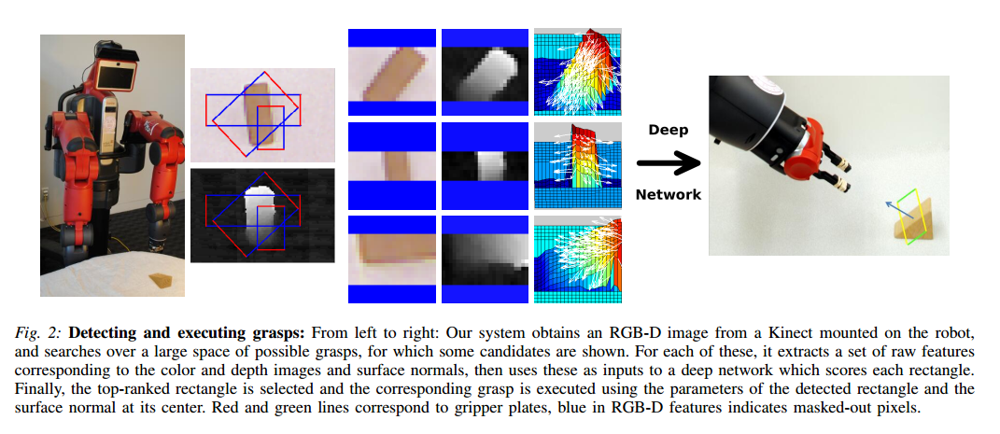
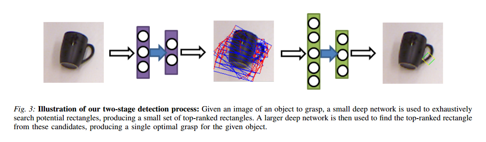
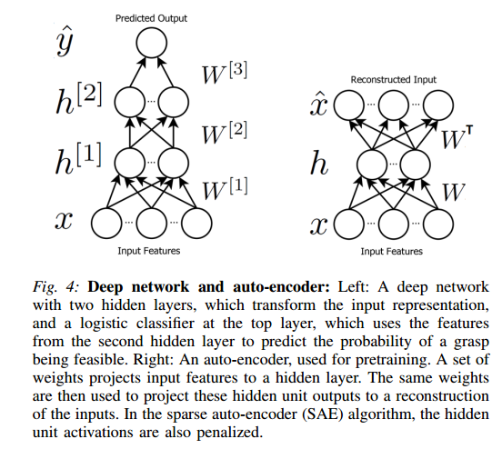

Deep Learning for Detecting Robotic Grasps¶
- 2014年 Cornell大学
1）Introduction¶
贡献：
- 推出机器人抓取检测深度学习算法，论文里说他们是第一个做这个方向的
- 推出结构化regularization方法处理multimodal data,就是多种类型的数据作为输入就是多模态数据，如文字和图像、音频和视频、RGB和深度图。
- 推出两阶段级联检测系统，该系统显著的缩短了计算消耗
- 在baxter双臂机器人和PR2机器人上做实验，分别得到84%和89%的抓取成功率
2）Related work¶
A . Robotic grasping:作者推荐阅读的文献:
1 2 3 4 5 6 7 8 9 | （1）grasp的定义： （2）Grasping for 3D Model：列举了很多文献说明基于3D Model的抓取策略需要对象完整的3D信息 （3）Sensing for grasping：列举文献，如何获取对象的抓取信息（位姿），反正就是很难直接获取到抓取位姿 （4）Learning for grasping：把基于机器学习的方法应用到抓取中，可以生成系统未见过的物体抓取位姿 （5）Other Application with RGBD Data： |
B. Deep Learning
- DL for Detection:列举了很多文献说物体检测，行人检测，这些都是获取物体的包围盒。而对于一个抓取对象来说，抓取框不止一个，需要从这些抓取框中选出最好的一个。
- Multimodal DL:普通的方法是单独学习每个低层的特征数据或者简单级联每个类型的数据后再进行学习。而在本篇论文中采用结构化正则方法进行学习。
3）DL for grasp detection: system and model¶
1 | 抓取方向矩形的定义：（x, y, height, width, angle） |
- 系统模型的结构

- 两阶段生成grasp示意图 
- 模型中的神经网络结构 